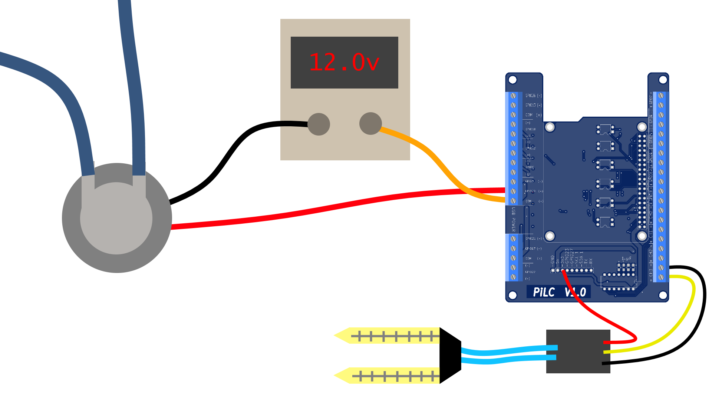
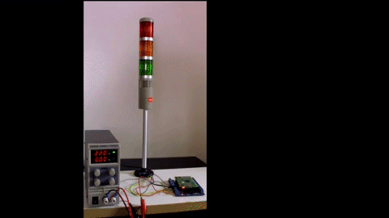
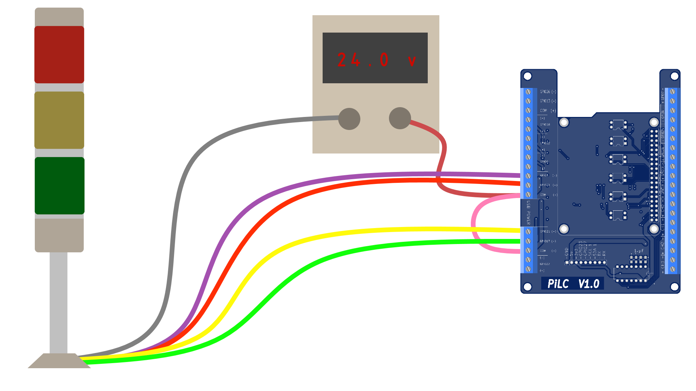
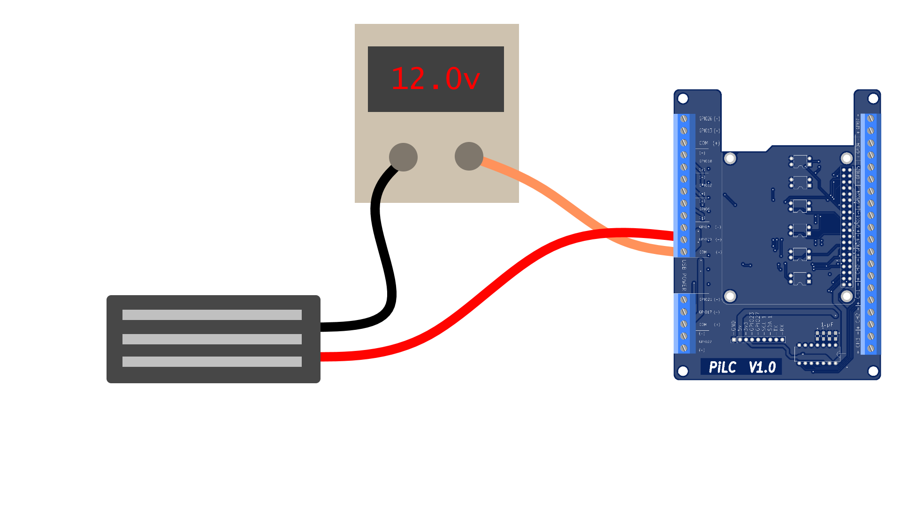
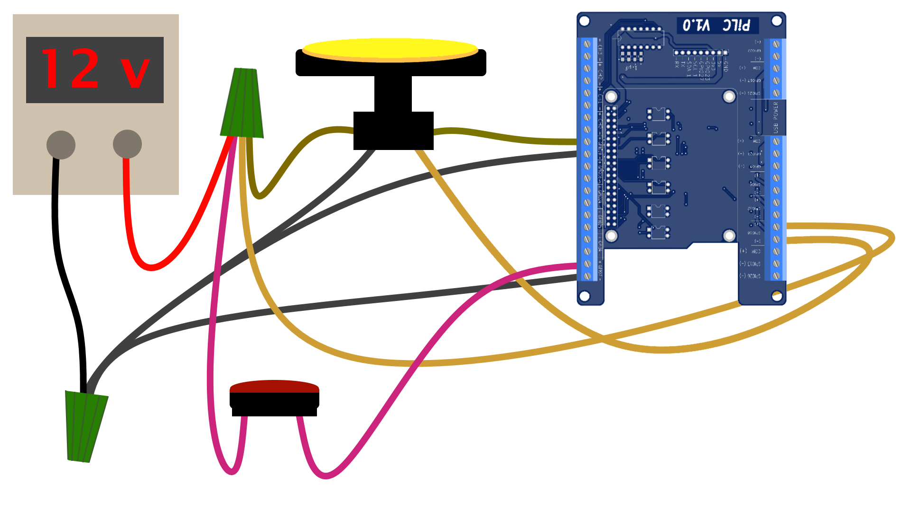

Table of Contents
1 Automatically Water House Plants!

1.1 Basic Idea
Monitor the moisture level of the soil with a hygrometer, then at a determined level, activate the pump for a certain number of seconds
1.2 Wiring Diagram

Pump Wiring
- Wire the 12v power through a digtal output to control the pump
- Hook the ground directly to to supply
Electric motors create inductive loads, so a flyback diode is recommended
Hygrometer Wiring
- 3.3v comes from the expansion header
- GND can either go to the expansion header, or the analog input (-)
- The signal wire goes to the analog input (+)
1.3 Code Example
This code simply turns the pump on
import RPi.GPIO as gpio from time import sleep, clock import sys # USE: python auto_water.py N, where N is the number of seconds to water # sys.argv[0] is the name of the script pump_duration = float(sys.argv[1]) PUMP_PIN = 12 try: gpio.setmode(gpio.BCM) gpio.setup(PUMP_PIN, gpio.OUT, initial=gpio.LOW) start_time = clock() gpio.output(PUMP_PIN, gpio.HIGH) while clock() < start_time + pump_duration: pass gpio.output(PUMP_PIN, gpio.LOW) finally: gpio.cleanup()
To get a single analog reading, try this script:
https://github.com/MatterOfTechnologies/PiLC/blob/master/Useful Code/Python/single_mcp3004_read.py
2 Bright Light Alerts from your Pi!

2.1 Uses
Flash when you get an email
You could poll your email server for changes
Indicate high CPU load
Show attempted SSH logins
Try looking for changes in the SSH logs
- /var/log/auth.log
Weather updates
Try openweathermap.org for a certain amount of free data (with account)
Notify when you've been mentioned in a tweet
Twitter API
Start a race
A simple GREEN RED YELLOW BEEP!!!
Tell your household to be quiet, you are recording
Turn that red light on
Play redlight/greenlight with your cousins
Make the red and green times random so the kiddos keep guessing
2.2 Wiring Diagram

- +24v comes from the power supply
- It goes to the COM of a joined relay
- A jumper supplies the +24v to another COM, allowing 4 different switches
- The colored wires from the light connect to the outputs for the joined relays
The grey wire connects to the GND of the power supply
Red Wire Red Light Yellow Wire Yellow Light Green Wire Green Light Purple Wire Purple Light Grey Wire Collective Grounds
2.3 Example Code
This is what you see in the GIF above
import RPi.GPIO as GPIO from time import sleep GPIO.setmode(GPIO.BCM) BUZZER, RED, YELLOW, GREEN = 5, 20, 21, 17 OUTPUT_CHANNELS = [BUZZER, RED, YELLOW, GREEN] for channel in OUTPUT_CHANNELS: GPIO.setup(channel, GPIO.OUT) try: turn_on = False while True: turn_on = not turn_on for channel in OUTPUT_CHANNELS[1:]: # I don't necessarily need to hear the buzzer GPIO.output(channel, turn_on) sleep(1) sleep(2) finally: GPIO.cleanup(OUTPUT_CHANNELS)
3 Create Spooky Action at a Distance with a Maglock

Maglocks are cool electromagnetic devices for locking doors and drawers or dropping secret items
The one shown above can hold 130 lbs at a modest 12v, 150 mA!
3.1 Wiring Diagram

- +12v comes from the power supply
- Then it goes through a digital output to switch the maglock
Maglocks create inductive loads, so a flyback diode is recommended
3.2 Code Example
import RPi.GPIO as gpio from time import sleep MAG_PIN = 12 ANSWER = 'the secret message' try: gpio.setmode(gpio.BCM) gpio.setup(MAG_PIN, gpio.OUT, initial=gpio.HIGH) correct_code = False while not correct_code: guess = raw_input('Type the secret message to open the lock\n\tGuess: ') correct_code = guess == ANSWER gpio.output(MAG_PIN, gpio.LOW) finally: gpio.cleanup()
4 Test your Reflexes with this simple Carnival Game!

4.1 Gameplay
Saddle up li'l partner and test your speed with this Reflex-O-Meter!
Are you quick as a snake or slow as a hog?
How to Play
- Tie one hand behind your back
- Press the start button and steel your gaze on the big button
Don't let your nerves get the better of you, keep your hand put until you see the light turn on!
- When that yeller light turns on, slap it quick!
- Reckon you done good if'n your score is faster than 0.5 seconds
4.2 Wiring Diagram

- +12v comes from the power supply
- 12v is split with a wire nut between the two switches and a digital output
- The digital output switches the yellow button light
- Both buttons are normally open, pressing them allows current through two digital inputs
- The negatives are collected at another wire nut
4.3 Code Example
import RPi.GPIO as gpio from time import sleep, clock from random import randint # [Start button, reflex button] digins = [19, 16] digouts = [12] result = 0 ### State Functions ### def standby(): ''' Wait for the game to begin! ''' # gpio.LOW means button pressed because inputs have pull-up resistors if gpio.input(digins[0]) == gpio.LOW: return 'game' else: return 'standby' def game(): ''' The main event ''' global result false_start = False # Add 1 to 6 seconds to the current clock time to randomize the game wait_time = clock() + randint(1, 6) # Wait for the clock to run out, watch for false starts while not false_start and clock() < wait_time: false_start = gpio.input(digins[0]) == gpio.HIGH if not false_start: # Turn on the LEDs gpio.output(digouts, gpio.HIGH) start_time = clock() while gpio.input(digins[1]) == gpio.HIGH: pass # wait until it is pressed # The time it took is the current clock time minus the start time result = clock() - start_time # Turn off the LEDs gpio.output(digouts, gpio.LOW) else: result = 0 return 'results' if result > 0 else 'false_start' def results(): ''' Display how good --or bad-- you did ''' global result print('Your reflex time was: %s seconds!'%(result)) return 'standby' def false_start(): ''' Sometimes we jump the gun ''' # Add more retorts to let people know that, just because we all have false starts, it isn't right and you should be ashamed retorts = ['Sometimes it is better to take too long than to be too early', \ 'You lose! Black and white, clear as crystal. Good day, sir', \ 'False start, buddy'] retort = retorts[randint(0, len(retorts)) - 1] print(retort) return 'standby' # Hold all of the states so it is easy to keep track of what to be doing STATES = { \ 'standby':standby, \ 'game' :game, \ 'results':results, \ 'false_start':false_start \ } # This try-finally block is important to free up the gpio pins for other processes in the future try: gpio.setmode(gpio.BCM) for i in digins: gpio.setup(i, gpio.IN, pull_up_down=gpio.PUD_UP) for i in digouts: gpio.setup(i, gpio.OUT, initial=gpio.LOW) # Each state returns which state to enter next next_state = 'standby' # Loop forever, use ctrl+c to exit while True: next_state = STATES[next_state]() sleep(0.02) finally: gpio.cleanup()